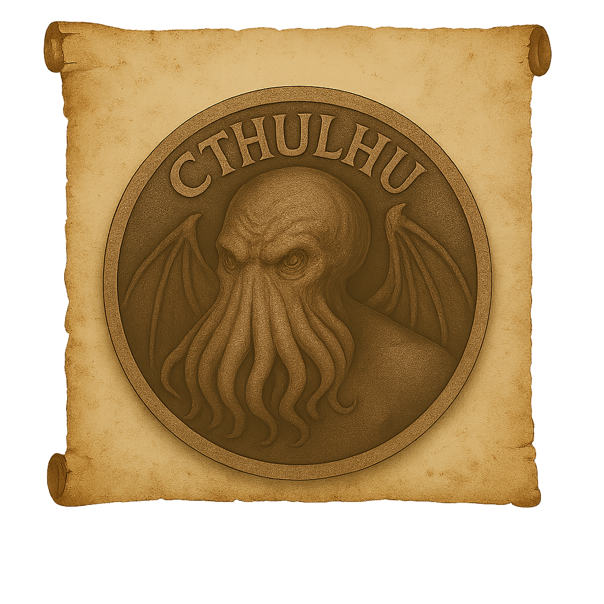

Insignia 02
Find more information about your Insignia, on your Insignias
PAGE 02 / 02 / 1928
Description
Cthulhu is one of the most dreaded and iconic entities within the Mythos—an ancient cosmic being of immense power, sealed beneath the Pacific Ocean in the sunken city of R’lyeh. Towering in form, Cthulhu combines cephalopod features with bat-like wings and a humanoid silhouette. Its head writhes with tentacles, its eyes shimmer with madness, and its presence alone can unravel the sanity of those who perceive it. Unlike lesser deities, Cthulhu does not act. It dreams. And through its dreaming, it influences cults, dreams, and minds across time and dimension. Many believe that when the stars align, the Great Old One will awaken—not with anger, but with indifference so vast it will erase meaning itself. Cthulhu is not worshipped in the conventional sense. It is awaited, feared, and whispered of in damp caves and derelict temples. It is a symbol of insignificance in the face of cosmic horror—a reminder that reality is thin and the void is watching.
"The most merciful thing in the world, I think, is the inability of the human mind to correlate all its contents. We live on a placid island of ignorance in the midst of black seas of infinity, and it was not meant that we should voyage far." — H.P. Lovecraft, “The Call of Cthulhu”
Clasification
- Class: Eldritch Forces
- Threat Level: Reality-Altering Apex
- Contact Risk: Permanent Cognitive Collapse / Worshipful Submission
- Presence Detected:Dreamscapes over the Pacific, seismic anomalies near R'lyeh coordinates, mass hysteria in coastal populations.
Scholar’s Record – Archivist Nh'rel-Tak
“On the 3rd hour of the Dreaming Eclipse, I was pulled beneath the surface of a sea that did not exist. There, amidst non-Euclidean spires and drowned stars, He stirred. Cthulhu did not rise — He unfolded. Minds ruptured in His wake. Language died in my throat. Since that night, my shadow moves on its own, and I no longer sleep — I remember.”
Investigator Advisory
- Do not sleep near open water during lunar alignments.
- If you begin to hear flutes in silence — evacuate immediately.
- Under no circumstances should you repeat names heard in dreams.
- First sign of influence: vertigo upon hearing the name “R’lyeh.”
- Second sign: spontaneous sketches of unknown geometries.
Supplemental Notes
According to the forbidden fragments of the Pnakotic Manuscripts, Cthulhu exists in a dormant, non-linear state beneath the Pacific. His consciousness leaks through sleep, infecting minds across timelines. Some theorists argue He is not a being but a cosmic cipher — a pattern that, once fully understood, annihilates the observer's reality and replaces it with His own.
Warning: This file has been reconstructed from dream remnants, trance scribbles, and neural echoes of compromised archivists. Exposure may result in altered perception, loss of narrative continuity, or spontaneous cult formation. Proceed with extreme caution.